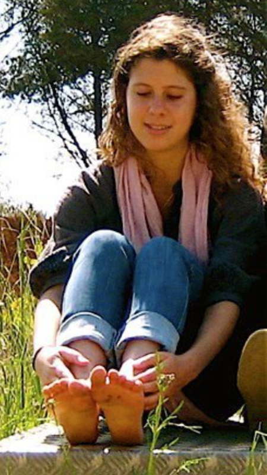

Friends and colleagues are welcome to schedule a time to visit Judy and Ken by contacting Judy--emails or texts preferred, please: 201-988-7444; or judykottick@comcast.net. Someone will get back with you quickly to confirm. Please remember that your visits are important not just right now, but for many weeks and months to come. The family is so grateful for your love, friendship, and support.
Please consider joining us on April 21st, 2013 in Philadelphia for this wonderful event: 18th Annual Dash for Organ & Tissue Donor Awareness
Be sure to join the team "Run for Ella". You may do the 3K walk, 5K run, or 10K run.

Since Ellas death, I was so inspired about her organ donations and the 8 lives she saved. She always said it was something she really wanted to do and she has inspired me to be an organ donor and push the cause. There is a run in Philadelphia in April sponsored by The Gift of Life. I started a team in honor of Ella, called Run for Ella and wanted to let you know how much I missed her and how important this cause is to me because of her.